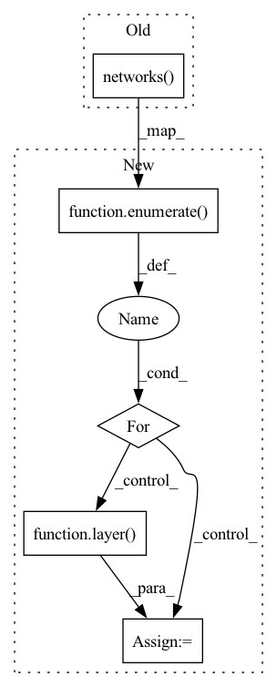

Pattern ID :40681
Before Change
def forward(self, state, action):
input = torch.cat([state, action], 1)
return self.networks( input)
class VNetwork(nn.Module):
def __init__(self,input_dim, out_dim, hidden_dims, act_fn="relu", out_act_fn="identity"):After Change
def forward(self, state, action):
out = torch.cat([state, action], 1)
for i, layer in enumerate( self.networks):
out = layer( out)
return out
class VNetwork(nn.Module):In pattern: SUPERPATTERN
Frequency: 4
Non-data size: 5
Instances Fragment ID: 114959771
Project Name: x35f/unstable_baselines
Commit Name: c76f47e0859e534f850cd3af12082f126c2df1a2
Time: 2021-03-09
Author: 1621322691@qq.com
File Name: common/networks.py
M Class Name: QNetwork
N Class Name: QNetwork
M Method Name: forward(3)
N Method Name: forward(3)
M Parent Class: nn.Module
N Parent Class: nn.Module
M File Name: common/networks.py
N File Name: common/networks.py
M Start Line: 62
M End Line: 63
N Start Line: 63
N End Line: 66
Before Change
return action_mean, action_log_std
def sample(self, state):
out = self.networks( state)
action_mean = out[:self.action_dim]
if self.deterministic:
action_mean = torch.tanh(action_mean) * self.action_scale + self.action_biasAfter Change
def sample(self, state):
out = state
for i, layer in enumerate( self.networks):
out = layer( out)
action_mean = out[:self.action_dim]
if self.deterministic:
action_mean = torch.tanh(action_mean) * self.action_scale + self.action_bias Fragment ID: 114959768
Project Name: x35f/unstable_baselines
Commit Name: c76f47e0859e534f850cd3af12082f126c2df1a2
Time: 2021-03-09
Author: 1621322691@qq.com
File Name: common/networks.py
M Class Name: PolicyNetwork
N Class Name: PolicyNetwork
M Method Name: sample(2)
N Method Name: sample(2)
M Parent Class: nn.Module
N Parent Class: nn.Module
M File Name: common/networks.py
N File Name: common/networks.py
M Start Line: 122
M End Line: 138
N Start Line: 132
N End Line: 150
Before Change
self.networks = nn.ModuleList(self.network_layers)
def forward(self, state):
return self.networks( state)
class PolicyNetwork(nn.Module):
def __init__(self,input_dim, action_dim, hidden_dims, act_fn="relu", out_act_fn="identity", action_space=None, deterministic=False):After Change
def forward(self, state):
out = state
for i, layer in enumerate( self.networks):
out = layer( out)
return out
class PolicyNetwork(nn.Module): Fragment ID: 114959769
Project Name: x35f/unstable_baselines
Commit Name: c76f47e0859e534f850cd3af12082f126c2df1a2
Time: 2021-03-09
Author: 1621322691@qq.com
File Name: common/networks.py
M Class Name: VNetwork
N Class Name: VNetwork
M Method Name: forward(2)
N Method Name: forward(2)
M Parent Class: nn.Module
N Parent Class: nn.Module
M File Name: common/networks.py
N File Name: common/networks.py
M Start Line: 83
M End Line: 83
N Start Line: 87
N End Line: 90
Before Change
self.deterministic = deterministic
def forward(self, state):
out = self.networks( state)
action_mean = out[:self.action_dim]
action_log_std = out[self.action_dim:]
if self.deterministic:
return action_meanAfter Change
def forward(self, state):
out = state
for i, layer in enumerate( self.networks):
out = layer( out)
action_mean = out[:self.action_dim]
action_log_std = out[self.action_dim:]
if self.deterministic:
return action_mean Fragment ID: 114959772
Project Name: x35f/unstable_baselines
Commit Name: c76f47e0859e534f850cd3af12082f126c2df1a2
Time: 2021-03-09
Author: 1621322691@qq.com
File Name: common/networks.py
M Class Name: PolicyNetwork
N Class Name: PolicyNetwork
M Method Name: forward(2)
N Method Name: forward(2)
M Parent Class: nn.Module
N Parent Class: nn.Module
M File Name: common/networks.py
N File Name: common/networks.py
M Start Line: 113
M End Line: 113
N Start Line: 121
N End Line: 124